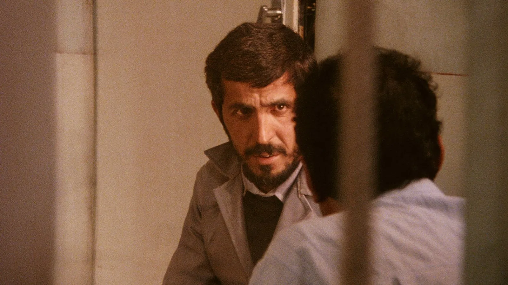
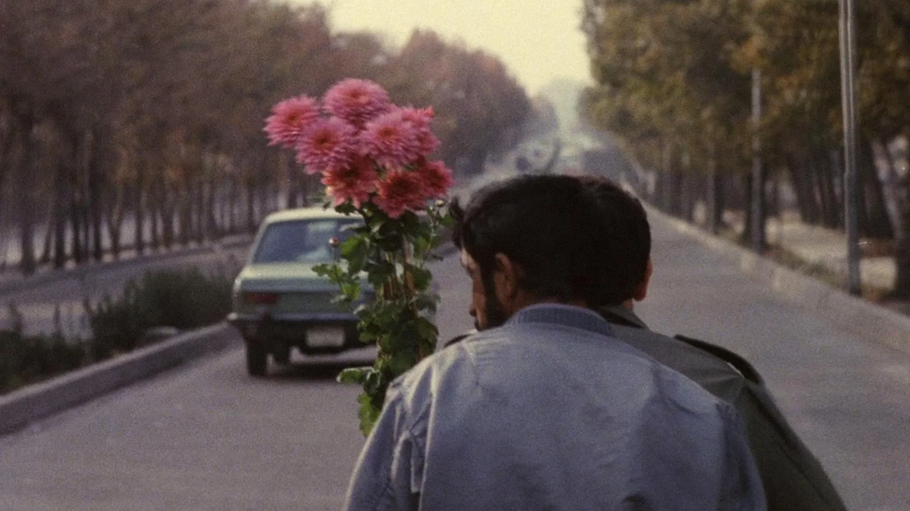

In the film Close-Up (1990), Abbas Kiarostami documents a strange and at the same time poignant event: a man named Hossein Sabzian pretends to be the famous Iranian director Mohsen Makhmalbaf, convincing a family from Tehran that they will participate in his next film. This is followed by an investigation, a trial, and, eventually, a film that cannot be clearly attributed to any genre. Kiarostami reconstructs real events with the participation of the victims themselves, creating a work that blurs the line between documentary and fiction, and challenges our perception of truth, authorship, and identity.
Kiarostami’s approach revokes the usual boxes of categories of cinema we tend to put a film in. By inviting real people of the incident to re-enact what happened, he creates a kind of a hybrid form that questions the authenticity of both feature and documentary films. By doing so, Kiarostami raises the question of the perception of what we, as audience, see and interpret, resembling the Kuleshov Effect, the idea that meaning in a film is born in the sequence of frames, not in a single frame. Therefore, it is important not only what we see, but also in what context it is presented.
The structure of the film makes us think about our own ideas about reality and representation. Kiarostami himself appears in the frame as an interviewer and director, creating real conversations and at the same time building a visual image. His presence is a discreet reminder that any movie is a construct. This technique, which critics call reflexivity, encourages the audience to question the very nature of the image we have come to trust.
Sabzian's fraud is not just a deception, but a deep cry for recognition, wanting to be seen and heard, a desire for belonging and self-expression. “I feel the urge to shout to the world the anguish of my soul, but no one wants to hear about them.” His identification with Mohsen Makhmalbaf is not just admiration, it is a painful attempt to escape from his social position through the imaginary status of the director and to be heard, to be understood. As he sits in the courtroom, his voice full of anxiety and sincerity, all eyes and cameras are on him, he softly says “I am interested in art and film,” and in Sabzian, we see a man for whom cinema becomes a way to assert his existence, to prove his belonging to something visible, touchable.
This resonates with the idea of man as a being who thinks through narration. British writer Will Storr argues in his book The Science of Storytelling that we don't just tell stories - we think in their form. “Locked inside the black vault of our skulls the story is a portal, a hallucination within the hallucination, the closest we'll ever really come to escape.”[1] Therefore, Sabzian's deception can be perceived as an existential gesture - a desire to be heard, to be part of a larger narrative.
Close-Up also addresses subtle but important ethical issues. Recreating real events with the participation of real people, Kiarostami finds himself in a difficult moral situation. Is he showing the truth or distorting it? The film encourages us to think about the responsibility a director bears when he shapes reality through cinema. Are these stories told with or instead of the characters?
At the same time, Close-Up explores how narrative shapes power. Sabzian gains respect and attention not because of money or position, but because of his imaginary authority as a "director," authority he so desperately tried to gain not to fool trusting people but to be seen as someone else in order to be heard.
The special power of Close-Up lies in its humanity. Kiarostami does not make Sabzian or the deceived family look ridiculous or pathetic. On the contrary, he gives them all dignity. In the final scenes of the trial, close-ups of Sabzian's face do not show a fraudster, but a man who seeks to be understood. His expressions - shame, hope, confusion - are shot with such delicacy that the viewer involuntarily begins to reconsider his own judgments.
This correlates with what researchers call neurocinema, a field that studies how movies affect brain activity and emotions.[2] Kiarostami, using precise visuals, does not just show us the hero - he makes us experience his inner world. Cinema here becomes not a window into someone else's life, but a mirror in which we ourselves are reflected. Using Apparatus Theory, according to which the very structure of film production - the methods of shooting, editing and showing - carries ideological attitudes that shape the perception of reality in the viewer,[3] we question ourselves: “Would we look at this story differently if it was edited in a different way? Would we feel empathy toward the main hero?”
Close-Up is not just a movie. It is a philosophical reflection. It erases the boundary between fiction and reality, between personality and role. We are reminded that cinema itself is never neutral; it carefully interprets, builds, and selects. But Abbas Kiarostami also shows that in these fictional forms we can find the real truth - the truth of desire, imagination, and ache for connection.
In a world where increasingly our reality is mediated by screens, the film remains not only relevant, but also necessary. Close-Up invites us to perceive cinema not as an escape, but as an exploration within. “For me, art is the experience of what you’ve felt inside.”
References
- Will Storr, The Science of Storytelling: Why Stories Make Us Human and How to Tell Them Better (New York: Abrams Press, 2020), 42.
- Uri Hasson et al., "Neurocinematics: The Neuroscience of Film," Projections 2, no. 1 (2008): 1–26.
- Jean-Louis Baudry, "Ideological Effects of the Basic Cinematographic Apparatus," Film Quarterly 28, no. 2 (1974): 39–47.